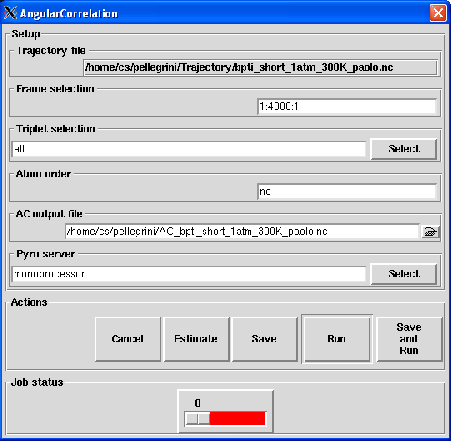

Next: Output
Up: Angular Correlation
Previous: Theory and implementation
Contents
Parameters
Pressing the Angular Correlation button will pop up the dialog shown on figure 4.38
Figure 4.38:
The dialog from where the AC analysis will be set up and run.
|

|
The following input fields controls the parameters for the Angular Correlation (AC) analysis:
- Trajectory file
Format: string
Default: traj_file where traj_file is the name of the loaded trajectory
Description: the value of this widget can not be changed. It just recalls for information purpose the name
of the trajectory file loaded for the analysis.
- Frame selection
Format: string
Default: 1:traj_length:1 where traj_length is the number of frames of the trajectory.
Description: this widget allows to select the trajectory frames that will be used for the analysis. This must
be a string of the form:
first:last:step
where first is an integer specifying the first frame number to consider, last is an integer specifying the last
frame number to consider and step is an integer specifying the step number between two frames.
For example,
- 2:10:3 will select the frames 2, 5 and 8.
- 1:5:1 will select the frames 1, 2, 3, 4 and 5.
- Triplet selection
Format: group selection string
Default: all
Description: this widget allows the selection of the triplets of atoms from which the analysis will be
performed. See Section 4.2.2.3 for more details. Any selection that does not contain exactly three atoms will
be discarded.
- Atom order
Format: string
Default: no
Description: this widget allows to specify the order in which the atoms a1, a2 and a3 should be
ordered. By default, the order will be defined by nMOLDYN by ranking for the atoms of each triplet by their
MMTK name. Otherwise, the entered value must have the following specific format:
MMTK name for a1,MMTK name for a2,MMTK name for a3
- AC output file
Format: string
Default: AC_traj_file.nc where traj_file.nc is the name of the input trajectory
Description: this widget allows to enter the name of the NetCDF output file of the AC analysis. A CDL
version of the NetCDF output file is also automatically created with AC_traj_file.cdl name.
Next: Output
Up: Angular Correlation
Previous: Theory and implementation
Contents
pellegrini eric
2009-10-06